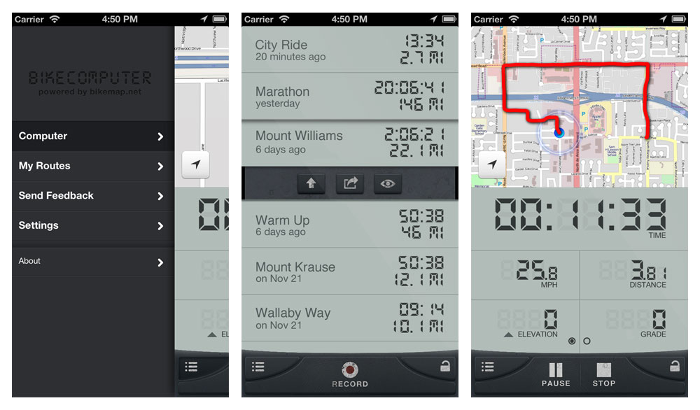
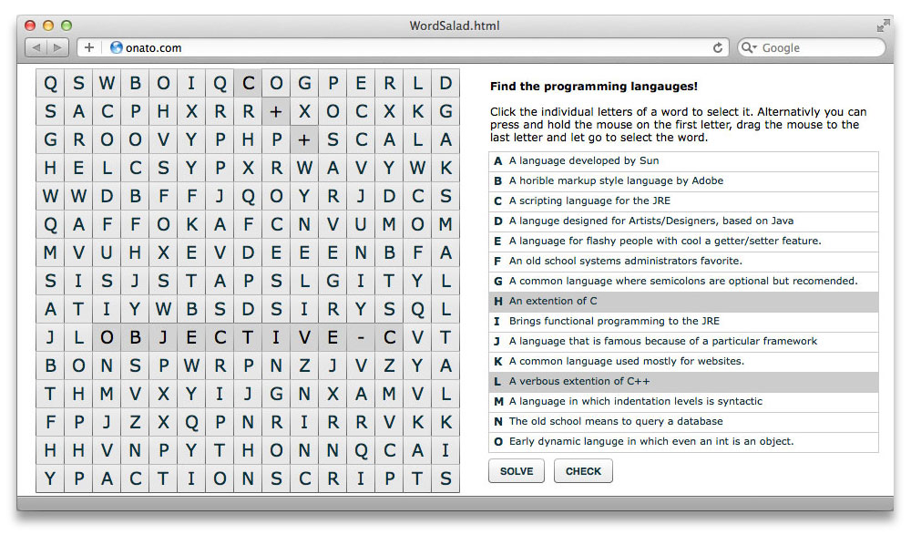
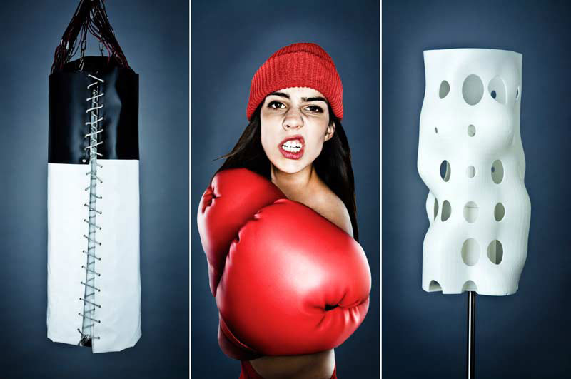

video2brain
An iPad app for video2brain,
a client of Parkside.
CHECK OUT MY LATEST WORK
BikeComputer shows you important training data and allows you to record your training sessions. By creating a training diary you can track your progress over time and help keep yourself and your motivation levels in great shape. On top of your training route BikeComputer displays and records

We all tend to want to think big, but often the small things, iterated over and over, are the most powerful and sustainable means of change.
By understanding how ant colonies self organize, with very little logic on the side of the individual ants, I tried to gain insight the principle of emergence.
These puzzles are flash apps integrated and configured through javascript. They are built to be easily integrated into learning management systems enabling e-learning publishers to quickly develop course relevant learning exercises.

The “Just in Time” renderer is designed for configuring color without loosing photo-realistic rendering quality. The renderer can be used instead of photographing many similar products in different colors.
The Cassius boxing bag is a tactile interface for sculpting a lampshade. Sixty three sensors record the location and force of your punches and deform a virtual lampshade at the corresponding location.

Energie Passagen was an installation in front of the Literaturhaus München. It reflected the energy of the city by projecting the most relevant words from RSS feeds of the newspaper. Visitors were able to explore the information river through a voice recognition system. By selecting words of interest people could rebuild their own version of current events.